Casa Vacanze
Montefortino Sibillini House
Palazzo Panoramico, Via D. Sbarra, 18, 63858 Montefortino FM
CIN: IT109015C2QMZBG7L2
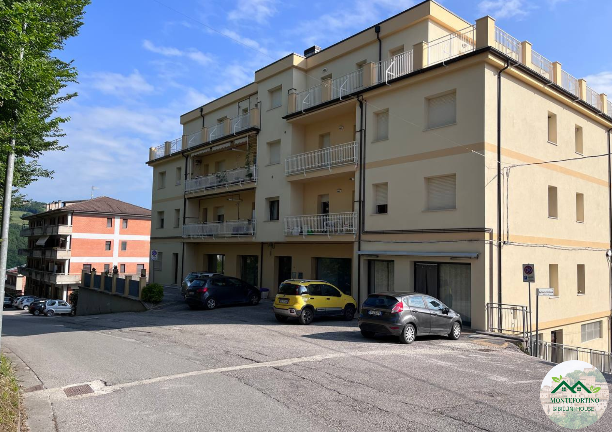
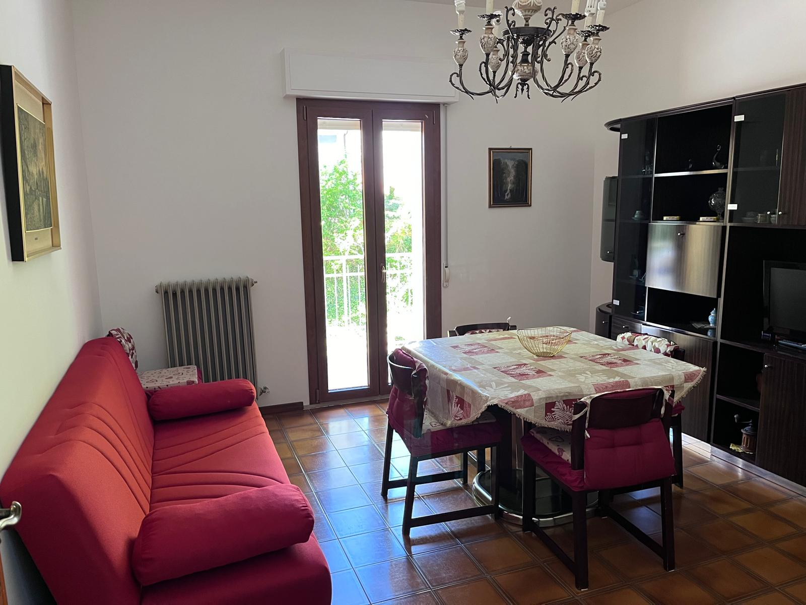
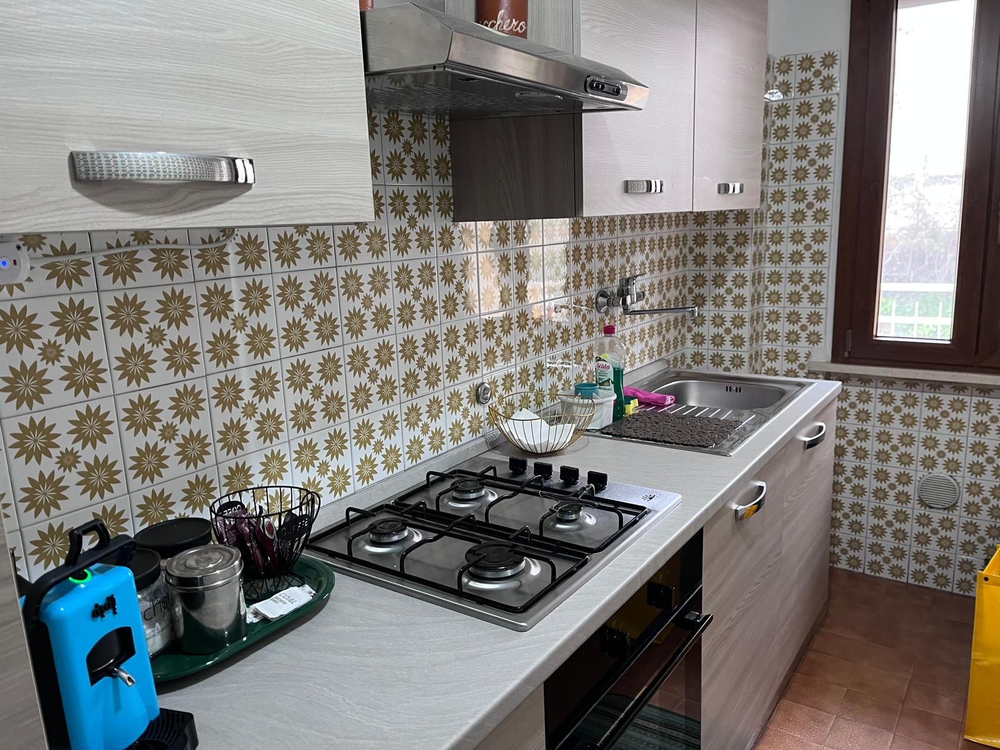
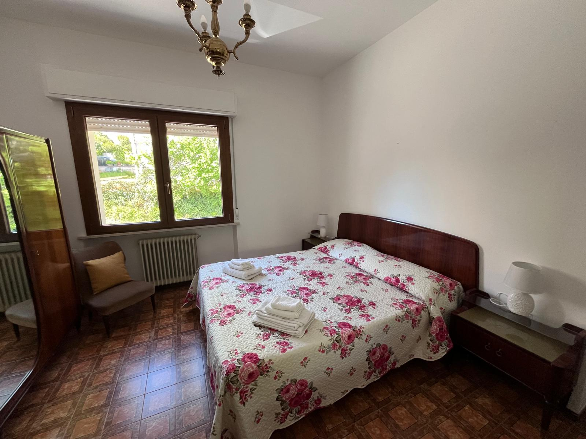
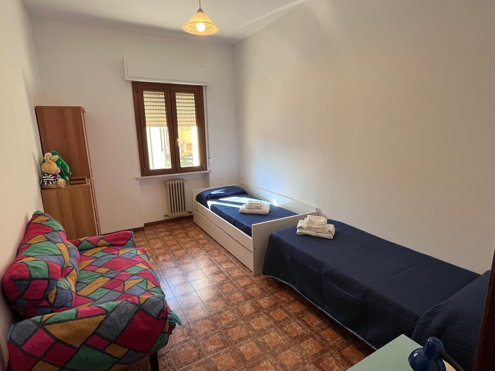

Dotazioni della struttura:
Cucina attrezzata
Bagno privato con Vasca
Parcheggio Gratuito
Balcone Panoramico
Lavatrice
Asciugacapelli
Divano
TV
🐾 Animale domestico in viaggio con te? Soggiorna GRATIS!
Baita in Montagna
La Baita dei Sibillini
Località Sossasso, 9, 63858 Sossasso FM
CIN: IT109015C2HHXST2K8
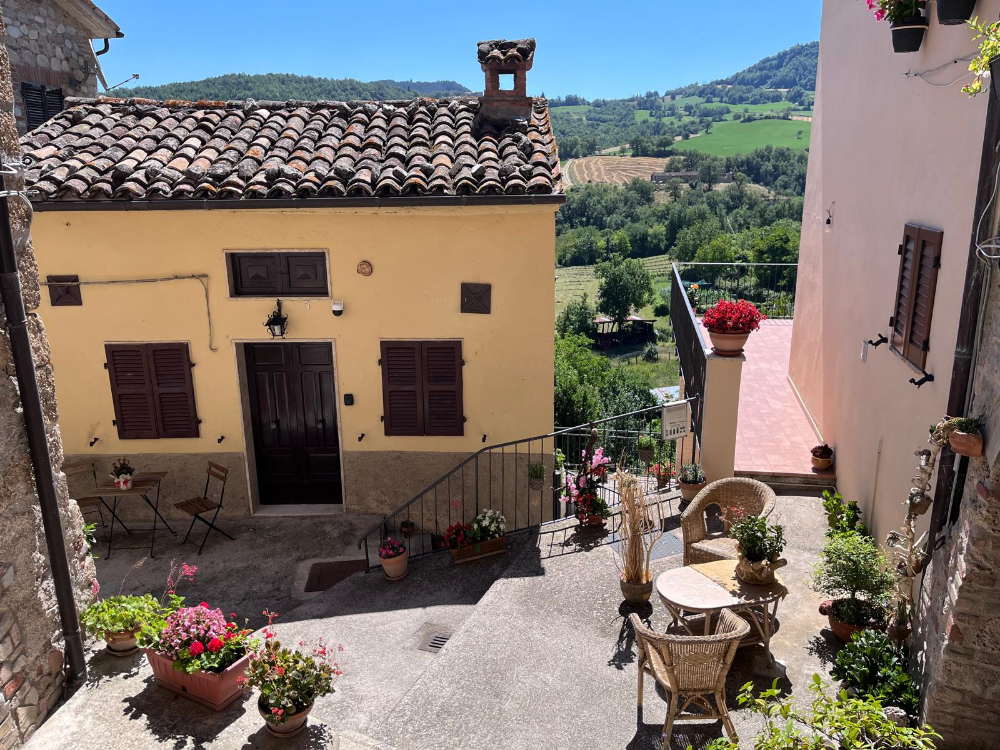
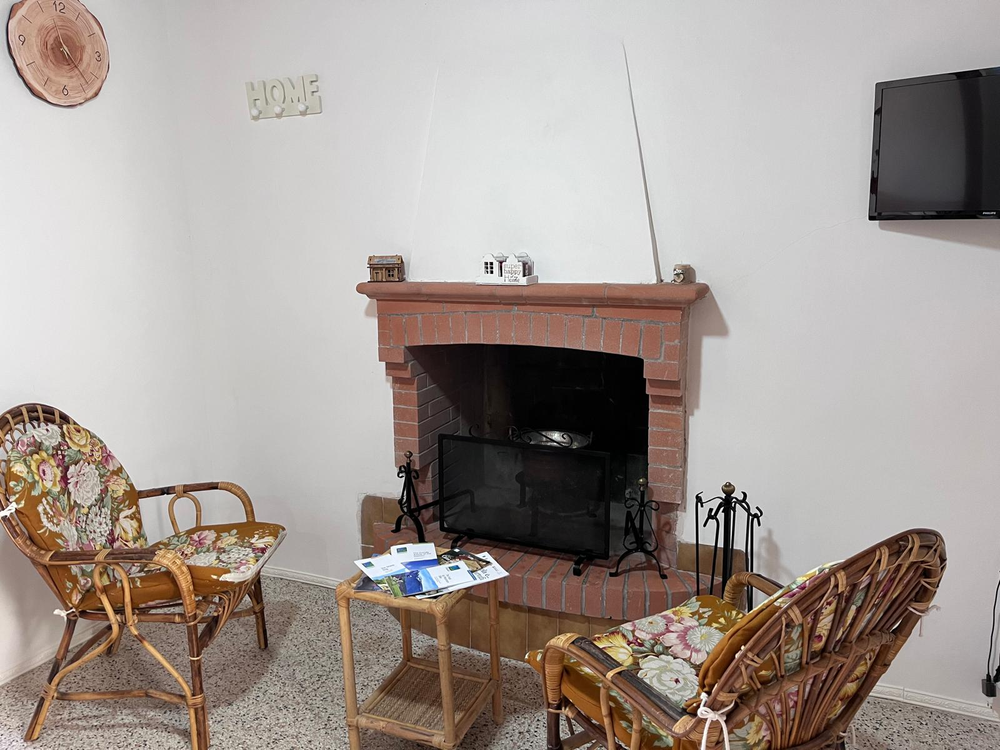
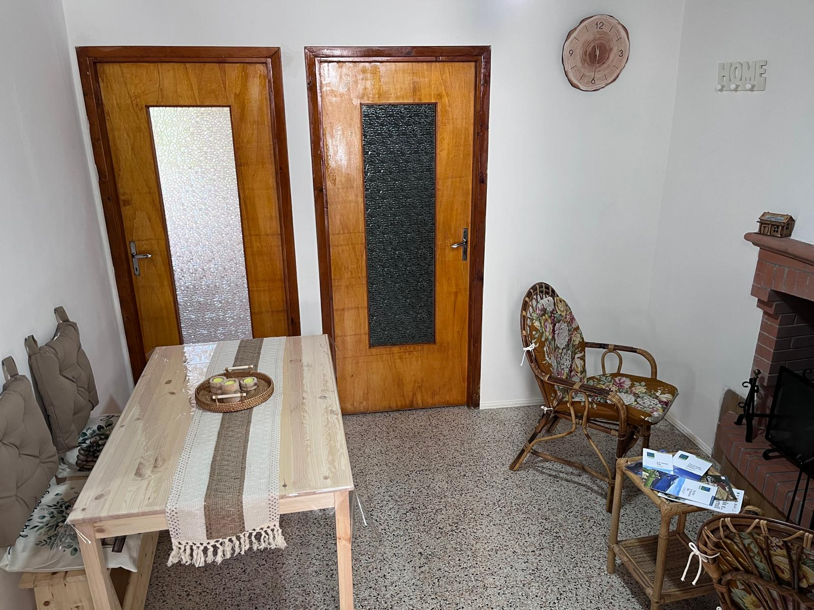
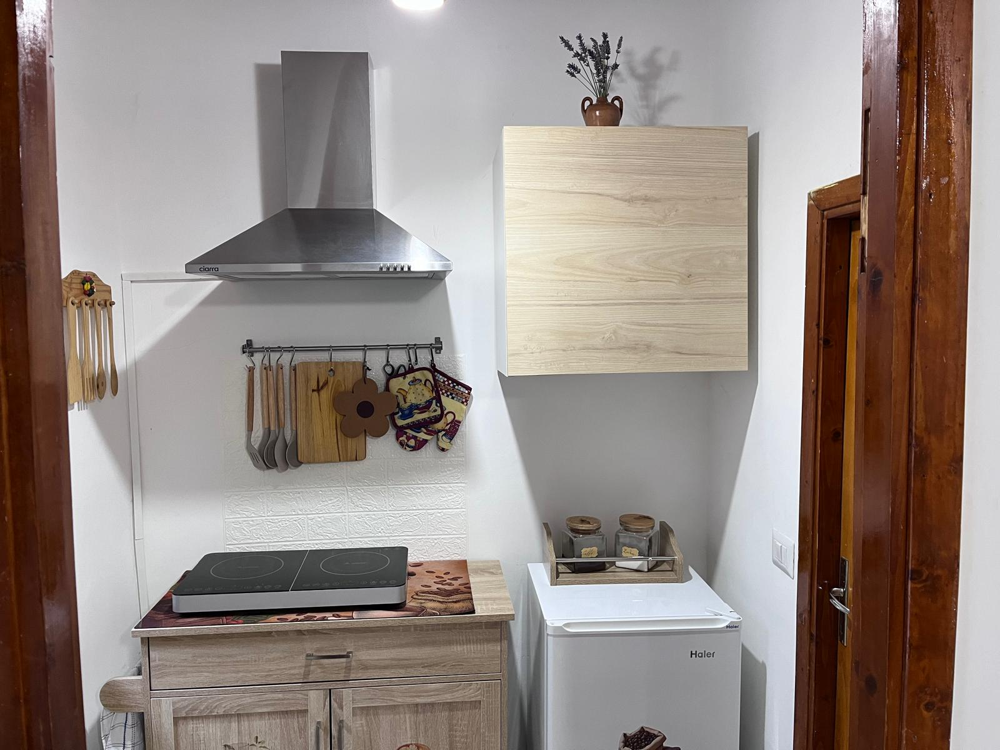
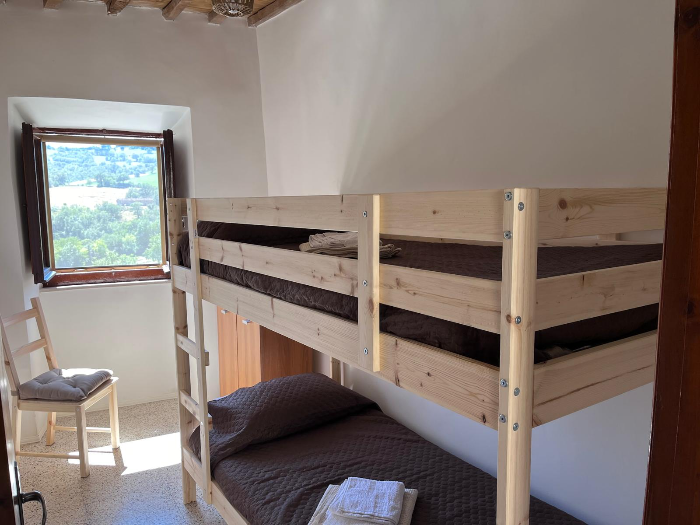
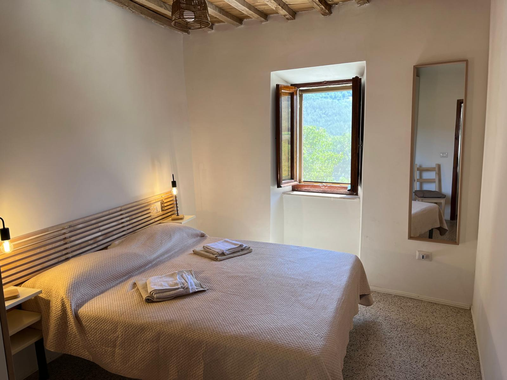
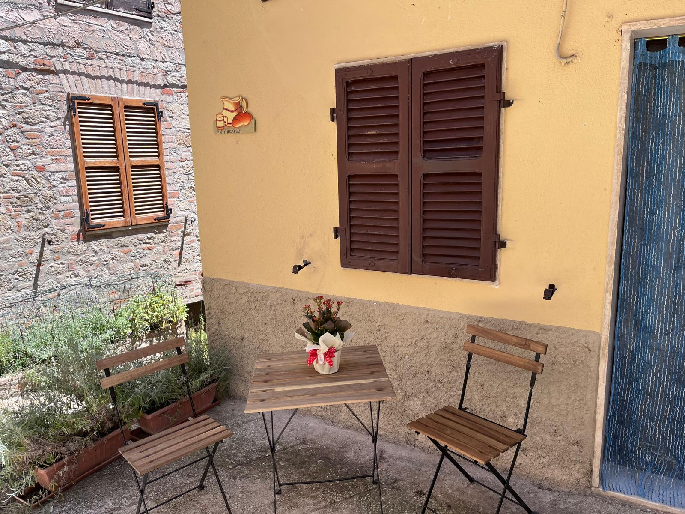
Dotazioni della struttura:
Piano ad Induzione
Camino Caratteristico
Wi-Fi Gratuito
Parcheggio Gratuito
Bagno privato
Asciugacapelli
TV
🐾 Anche qui i cani sono i benvenuti senza alcun costo aggiuntivo!